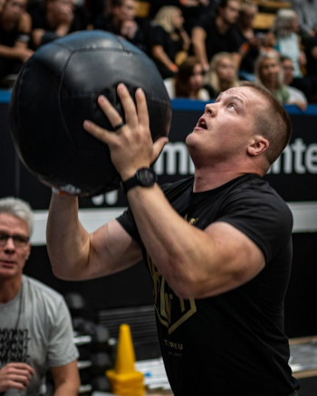
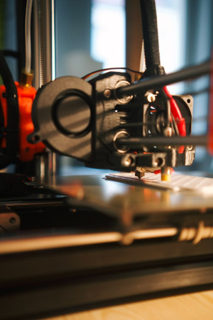

Kuntosalilla olen käynyt noin kaksikymmentä vuotta. Harjoittelutyyli on vuosien välillä vaihdellut runsaasti, kehonrakennustyyppisestä harjoittelusta voimaharjoitteluun ja crossfittiin. 2019 harrastelin crossfittia hieman enemmän tosissani ja kävin osallistumassa muutamaan kisaan, suurimpina mainittakoon Turun Tuomiopäivä sekä Espoossa Unbroken. Nykyään harrastelen rennommin ja ensimmäistä kertaa vuosiin minulla ei ole edes kuntosalijäsenyyttä, vaan treenaan kohtuullisen hyvin varustetussa kotisalissani. Työpaikalta löytyy myös sali ja työaikaan kuuluukin joka vuorossa liikunta.
Liikunta
Kuntosalin lisäksi minulla on ollut paljon muita liikuntaharrastuksia vuosien varrella kamppailulajeista amerikkalaiseen jalkapalloon. Uusimpana innostuksena on ollut maastopyöräily. Viime syksynä ostin täysjoustosähkömaastopyörän ja olenkin viettänyt paljon aikaa metsässä rymyten. Metsässä pyöräily on mukavaa vaihtelua kuntopyörän polkemiseen autotallin hämärässä.


3D
Kiinnostuksiini kuuluu myös 3d-tulostus sekä mallinnus. Olen kasannut itselleni Prusan MK3S+ mallin tulostimen ja harjoitellut 3d mallintamista Fusion 360 ohjelmiston ilmaisversiolla. Pääsääntöisesti olen tulostellut ja suunnitellut erilaisia pieniä käyttöesineitä kuten autotallin säilytysratkaisuita sekä puhelintelineen kuntopyörään.
Myös Unitylla olen testaillut 3D maailman rakentamista ja aion harjoitella aihetta lisää ohjelmointiharjoittelun yhteydessä.